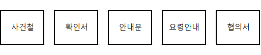

00:00

화요일 자녀교육(중, 고등학생)
13시30분에 준비물을 챙겨서 4층 법정으로 올라간다.
준비물: 사건철, 자녀양육안내 참여확인서(중, 고등학생 자녀용), 확인기일 안내문, 협의이혼 요령안내, 양육협의서, 볼펜
할일:
- 1. 준비물을 들고 4층법정 뒷문으로 올라간다.
- 2. 에어컨or히터 + 공기청정기? 가동
- 3. 스크린을 내리고 빔프로젝트 전원을 킨다.
- 4. 본체를 키고 비밀번호 입력 후 부모교육영상을 재생시킬 준비를 한다.
- 5. 준비물을 순서대로 나열 ↓ 
- 6. 13시 40분에 준비가 끝났으면 밖으로 나가서 [부모교육 오신 분 들어오세요.]
신분확인:
- 1. 부부 한 쌍씩 부른다.
- 2. 신분증 제출한 것을 보고(주민등록등본확인)후 사건철에서 사건 찾기.
- 3. 확인서에 성함싸인 X2
- 4. 자녀양육교육외에 따로 상담을 받고 싶은지 물어본다.
(상담을 원하면 따로 상담위원님과 시간약속을 잡는다) - 5. 안내문에 적힌 기일 설명
- 6. 요령안내 2부, 협의서 1부 드리며 설명
수요일 자녀교육(초등학생이하)
13시30분에 준비물을 챙겨서 4층 법정으로 올라간다.
준비물: 사건철, 자녀양육안내 참여확인서(초등학생 자녀용), 확인기일 안내문, 협의이혼 요령안내, 양육협의서, 볼펜통, 의원님 드릴 서류
할일:
- 1. 준비물을 들고 4층법정 뒷문으로 올라간다.
- 2. 에어컨or히터 + 공기청정기? 가동
- 3. 스크린을 내리고 빔프로젝트 전원을 킨다.
- 4. 본체를 키고 비밀번호 입력 후 부모교육영상을 재생시킬 준비를 한다.
- 5. 준비물을 순서대로 나열 ↓
- 6. 13시 40분에 준비가 끝났으면 밖으로 나가서 [부모교육 오신 분 들어오세요.]
신분확인:
- 1. 부부 한 쌍씩 부른다.
- 2. 신분증 제출한 것을 보고(주민등록등본확인)후 사건철에서 사건 찾기.
- 3. 확인서에 성함싸인 X2
- 4. 안내문에 적힌 기일 설명
- 5. 요령안내 2부, 협의서 1부 드리며 설명
- 6. 뒤에 있는 (설문지)서류를 인당1부씩 작성하라고 안내